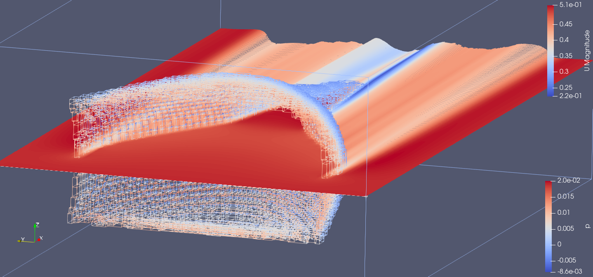
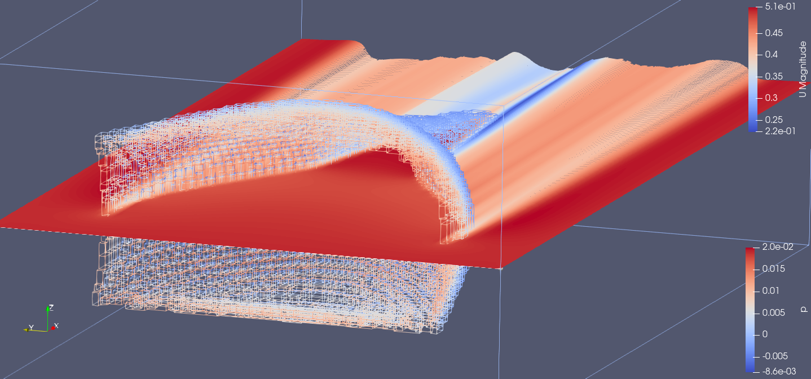

Summary
This was the final project for my minor in Computational Science and Engineering. During this project we developed a two-way non-linear cloth simulation, which was used to model the behaviour of fishing nets. The project was done in a team of 5 students, and I was responsible for the fluid simulation in OpenFOAM.
We developed a very computationally efficient simulation, which was able to simulate a 3D fishing net with accurate correspondence to the literature. On the OpenFOAM side, I developed a new OpenFOAM application for converting the output from the cloth simulation to a mesh suitable for OpenFOAM and for then converting the fluid simulation results back into pressures exerted onto the net. In order to do this, I generalised an approach in the literature to work for arbitray net shapes while checking it still was identical in the simple case. Working on this project was a fun experience and I learned a lot about OpenFOAM, using this experience to provide OpenFOAM workshops at the Robotics Student Association.
 

More details
Here, I will discuss some interesting aspects of the work I did for this project. I will begin by shortly discussing the net simulation side of the simulation to also give a background on that part of the simulation. After this I will focus on the fluid simulation, starting with our literature study on porosity and the work of Chen et al. in 2016 [1], which provided the basis for our approach. I will then describe how I generalized the panel case to take into account volume, surface, and direction. Next, I will explain how I parallelized the computations to improve performance. Finally, I will compare our results to those found in the literature.
Nonlinear net solver
The net simulation was performed using a nonlinear cloth solver developed by other students on the team. The mass-spring model was based on the method proposed by Provot et al. (1995) [2] and initially assumed a steady, uniform flow to simulate the net behaviour. Later the net simulation could use the pressure fields computed by the fluid simulation to simulate the interaction with the fluid. Below is a figure which shows a qualitative comparison between the net simulation (without flow interactions) and experimental data by Chen et al. (2016) [1].
Simulating the net in a fluid
With the net simulation in place, we looked at methods to simulate the influence of the net on the fluid. We eventually settled on a method based on the work of Chen et al. (2016) [1], which was the most promising method we found in the literature for our limited computational power. The method is based on the idea that the net can be seen as a porous medium, and that the pressure exerted by the fluid on the net can be computed by computing the momentum loss over the porous volume. The method essentially adds a momentum sink term to the incompressible Navier-Stokes equations in some regions of the mesh to model the presence of a porous region. This is know as the Darcy-Forchheimer equation, see [3].
The method of Chen et al. (2016) [1] is only directly applicable to a simple case, where the net has constant Darcy-Forchheimer coefficients (see the image to the right) but in this case we wanted to apply the method to a net with arbitrary shape as simulated by the cloth solver. In the most ideal case the net would be represented in a complex OpenFOAM mesh with varying Darcy-Forchheimer coefficients in every cell. However, due to time (and experience) constraints I chose to simplify the problem to a case where the full net shape is represented by a set of panels which behave exactly as those in the method of Chen et al. This is described in more detail below.
Generalising the panel case
In order for the panel case to be generalised, I needed to find a way to compute the Darcy-Forchheimer coefficients for each porous region which represents a single panel. This was done by generalising the coefficient calculation to arbitrary geometries, taking into account the volume, surface, and direction of the panel. The volume and surface of the porous region were computed by integration over the relevant parts over the mesh. Calculating the volume for these regions in that way was trivial but calculating the projected surface area was more difficult. The images below represents the surface calculation process for a single panel. In these images, the cells represent the porous region and the plane represents the panel.

The projected surface area of the porous region is calculated by taking the dot product of the normal vector of the panel and the normal vector of every cell face, and then integrating this over all cell faces. The result is show in the right image, where the black outline is the outline of the projected area using this method. The red areas represent a small error in calculating the areas in this way. These areas are counted twice in the final result. This is because calculating the projected area with integration like this assumes that the porous region has a convex shape but that may not be always guaranteed (such as in this example). However, this remains a reasonable assumption for the panels as the error is small relative to the total area and given that this error also decreases when the resolution of the mesh is increased.
The results of the above method are shown in the figures below. Here the case from Chen et al (2016) [1] is recreated but now no manual input of the Darcy-Forchheimer coefficients is required. This now also allows for easily changing the mesh resolution as the coefficients are computed automatically using the volume and the projected area of the porous region.
The image on the left shows a panel represented by a high resolution porous region in black and by a low resolution porous region in white. The image in the middle then shows the Darcy-Forchheimer as a function of this resolution and the image on the right shows the sensitivity of the drag and lift coefficients to the resolution. These results show that the panel simulation is not sensitive to the mesh resolution, only varying by a few percent over a sixteen-fold resolution increase. This is good news for the computational intensity of the method. These lift and drag coefficients also correspond exactly with the results from Chen et al. (2016) [1] for the same case. This shows that the method is working as intended.
Parallelizing and computational resources
Just our laptops, performance bottlenecks. Parralelization broke a lot of stuff in the last weeks before the deadlines. Redo everything but got it working in the end. Our laptops. COVID, file transfers. Different languages Python, C++, OpenFOAM, Bash, Different Operating systems. Very flexible approach.
Correspondence with literature
Corresponded very well with literature (net opening). Nonlinearity in resolution when simulating full net. Fluid simulation not so cheap as initially thought. Get very far with only net simulation assuming steady uniform flow.
Experience
Learning OpenFOAM: Learning to use the program, learning to compile OpenFOAM applications in VSCode, running windows subsystem for linux, fighting with memory constraints crashing laptops. Was a good experience, great team and tutors. went on to use OpenFOAM in other projects and taught it to others at the RSA in workshops.
References
[3] The Darcy-Forchheimer Equation https://openfoamwiki.net/index.php/DarcyForchheimer